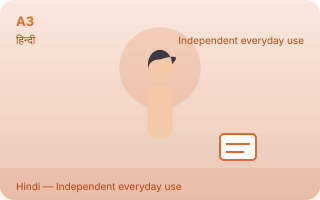
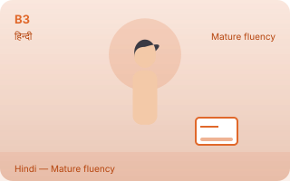
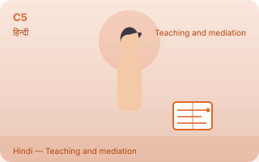

How EkGuru levels work — A1 to C5, in order
Every course on EkGuru walks the same ladder: eleven levels, in the exact order A1 A2 A3 B1 B2 B3 C1 C2 C3 C4 C5. Six of them are the official international standard (CEFR); the other five are EkGuru's own extension, and they are always labelled "EkGuru Extended Mastery" so that nobody reads them as an official CEFR level. This page says exactly what each level means you can do, which ones are official, and how long each one usually takes.
The official part: CEFR's six levels
The Common European Framework of Reference for Languages — the scale behind almost every exam in the world, from IELTS to Goethe to DELF — has six levels: A1, A2, B1, B2, C1 and C2. It does not have an A3, and it does not have a C3, C4 or C5. An employer or a university can check a CEFR level against a real exam; no other label can do that, and EkGuru never presents one as if it could.
The extension: EkGuru Extended Mastery
What are A3, B3, C3, C4 and C5? They are levels EkGuru added on top of CEFR's six, for learners who have gone past what the framework describes. Each one is a real, specific target:
- A3 — independent everyday use: hold everyday conversation without preparing for it, handle routine situations end to end.
- B3 — mature fluency: speak and write at length with precision, manage debate and wider production.
- C3 — specialization: work inside a domain — legal, medical, technical or literary language at depth.
- C4 — expert depth: academic and professional writing, research-grade reading, precise argument.
- C5 — teaching and mediation: teach, mediate between languages, translate and explain the language itself.
They appear on this site in the exact order A1 A2 A3 B1 B2 B3 C1 C2 C3 C4 C5, always marked "EkGuru Extended Mastery" and never described as official CEFR. A course publishes an extended level only when its full content has been authored; until then the rung is shown in order and marked "in development" — an honest ladder shows its rungs and says so, instead of filling them with filler.
| Level | What it is | What you can do at this level | Typical guided hours |
|---|---|---|---|
| A1 | First words · CEFR | Greet someone, count to twenty, read a shop sign, say your name and where you are from. | 60–80 |
| A2 | Everyday sentences · CEFR | Talk about your day, shop, order food, write a short message, understand slow clear speech. | 180–200 |
| A3 | Independent everyday use · Extended | Hold everyday conversation without preparing for it, handle routine situations end to end. | In development |
| B1 | Intermediate · CEFR | Explain a problem, write a real message, follow a podcast or a film with subtitles, handle a doctor or an office. | 350–400 |
| B2 | Upper intermediate · CEFR | Read a newspaper, write a real letter, joke, follow a fast conversation between two native speakers. | 550–600 |
| B3 | Mature fluency · Extended | Speak and write at length with precision, manage debate and wider production. | In development |
| C1 | Advanced · CEFR | Idiom, register, tone — and hear when something is slightly wrong. Write clearly on a complex subject. | 800–900 |
| C2 | Mastery · CEFR | Poetry, law, humour — and the one mistake that still sounds foreign. Essentially everything the framework describes. | 1,100+ |
| C3 | Specialization · Extended | Work inside a domain: legal, medical, technical or literary language at depth. | In development |
| C4 | Expert depth · Extended | Academic and professional writing, research-grade reading, precise argument. | In development |
| C5 | Teaching and mediation · Extended | Teach, mediate between languages, translate and explain the language itself. | In development |
The hour counts are a planning number for a language that is not close to your own, counting guided study plus practice. They are the figures language schools use in their prospectuses, not a promise: how fast you move depends far more on how often you practise than on any method. The extended levels get no hour count until their content is published.
Why the figure is the same person at every level
Every language hub on this site carries one figure per level. The figure is the same neutral learner at every rung — the picture never gets younger or older as the level goes up. A level is a description of what you can do, not an age group: an adult starts at A1 every day, and a teenager can be at C1, and nothing on the page should suggest otherwise. What does change as the level goes up is the context beside the figure — from a single letter at A1 to a full page of text at C5 — the honest way to show that the work gets more complex.









How to use the levels on this site
- Find your language hub. Each one lists all eleven levels, in order, with what you can do at each and the figure that goes with it. All languages →
- Start where the description is true of you. If "talk about your day, shop, order food" is comfortable, start at B1 rather than replaying A1.
- Practise every level, do not just read it. Reading a lesson is a third of the work; the quiz, the worksheet and the review deck are where a level actually sticks. Every language hub has lab, practice, quiz and review.
- Climb one level at a time. A level is not a certificate; the level test on each page is the honest checkpoint that the next one is ready.
- Take a tutor when you want one. Never required — see the tutors — and useful mainly from B1 upward, when the thing you need is somebody to correct you out loud.
See the ladder on a real course
A level stops being abstract once it has a page. Every self-study course here can be read level by level, without JavaScript and without an account: the lessons, the vocabulary with its romanisation, the grammar, the dialogues, the practice questions with the answers, the worksheet and the level test — one page per published level, and one page that shows the whole ladder in order.
- Arabic: the full ladder — six published levels and the extended rungs in order, and its first level, Arabic A1
- Spanish B1 — a level where conversation starts, in the same shape as every other page here
- Japanese C2 — the top of the official CEFR scale
- Every language →
Each language's page for a level carries the same figure the hub and this guide show — one neutral learner, so the picture never implies that a level belongs to an age group.
Questions people ask about the levels
Is A3 an official CEFR level?
No. CEFR has six levels: A1, A2, B1, B2, C1, C2. A3, B3, C3, C4 and C5 are EkGuru's own extension — EkGuru Extended Mastery — and they are labelled that way everywhere on this site, so nobody mistakes them for the international standard.
Do I have to start at A1?
No. Start where the description is honestly true of you. Guessing low costs you months of boredom; guessing high costs you confidence, so if you are between two levels, take the lower one and finish it quickly.
When do the extended levels get content?
When it has been authored for a specific language — real lessons, practice and a level test, the same standard as every other level page here. Until then the rungs appear in order on the ladder, marked "in development", and nothing links to a page that does not exist.
Where can I be tested?
EkGuru's quizzes tell you how well you did on what this site teaches; they are not a certificate, and this site will not pretend otherwise. For a document an employer or a university accepts, sit an official exam — IELTS, Goethe, DELF, DELE, JLPT, HSK, TOPIK, and their Indian equivalents — and use this site to get to the level those exams ask for.
Ready to start? Hindi, languages from Arabic to Vietnamese, or the course list.